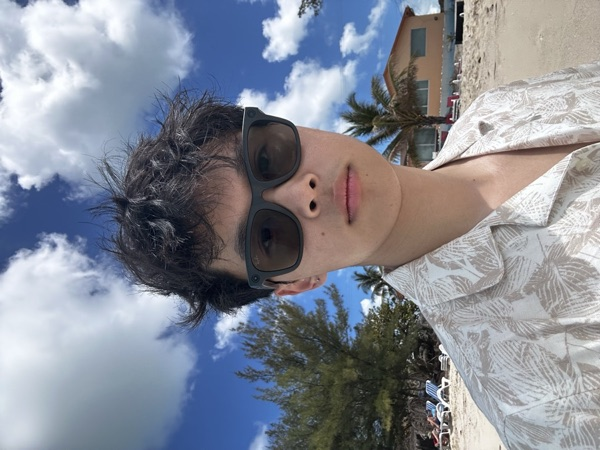
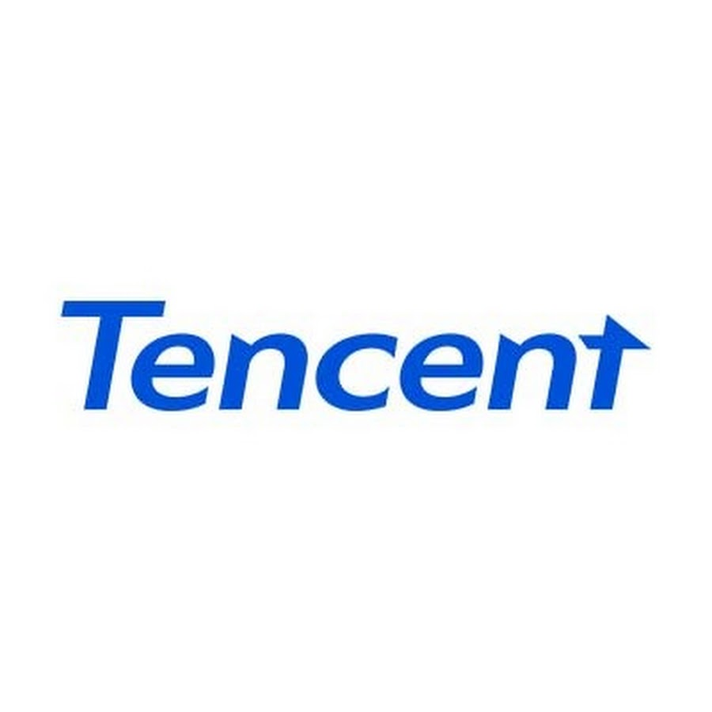

I'm Junjie 俊杰.
CS + Applied Mathematics @ UC Berkeley
I focus on reinforcement learning, agent training, continual learning, and evaluation.
I am broadly interested in language models, machine learning, and deep learning, and I am currently learning more about inference and optimization.
Outside of research, I am interested in learning about investment in the world of venture capital. I love to read.
Expected graduation · May 2028
Currently
I am looking for roles in post-training research, machine learning engineering (MLE), and software engineering (SWE).
Research
Berkeley, CA
RL for language models and agents; advised by Raluca Ada Popa & Ion Stoica.
I am forever thankful for the mentoring from Sijun Tan, Tianhao Wu, and Sida Li.
Stanford, CA
NLP Group; advised by Dan Jurafsky and mentored by Chen Shani, exploring whether post-training can steer language models toward concept-preserving reasoning.
Florence, Italy
Contributed to the Vulci project with Maurizio Forte, doing geophysical surveys and computer graphics; mentored by Nevio Danelon and Antonio Lopiano.
Internships

Palo Alto, CA
San Francisco, CA
First-authored "Towards Expert Financial QA via Self-Improving RAG" (AFA Workshop @ ICLR 2026).

Beijing, China
Two rotations:
1) AI Product, building a Plaud-style voice-memory product with a memory layer over Mem0, Zep, and Letta, and audio-language models for detection and evaluation;
2) AI Infra on Xiaomi MiMo, building pretraining data pipelines (deduplication and quality filtering) and internal tooling for data QA, validation, and dataset access.
Shenzhen, China
Supported deal sourcing and due diligence for early-stage consumer investments, including Tea'stone, Pop Mart, Chi Forest, and Qiandama. Cowin is a private equity and venture capital firm founded in 2000, with about US$4.7 billion in AUM.